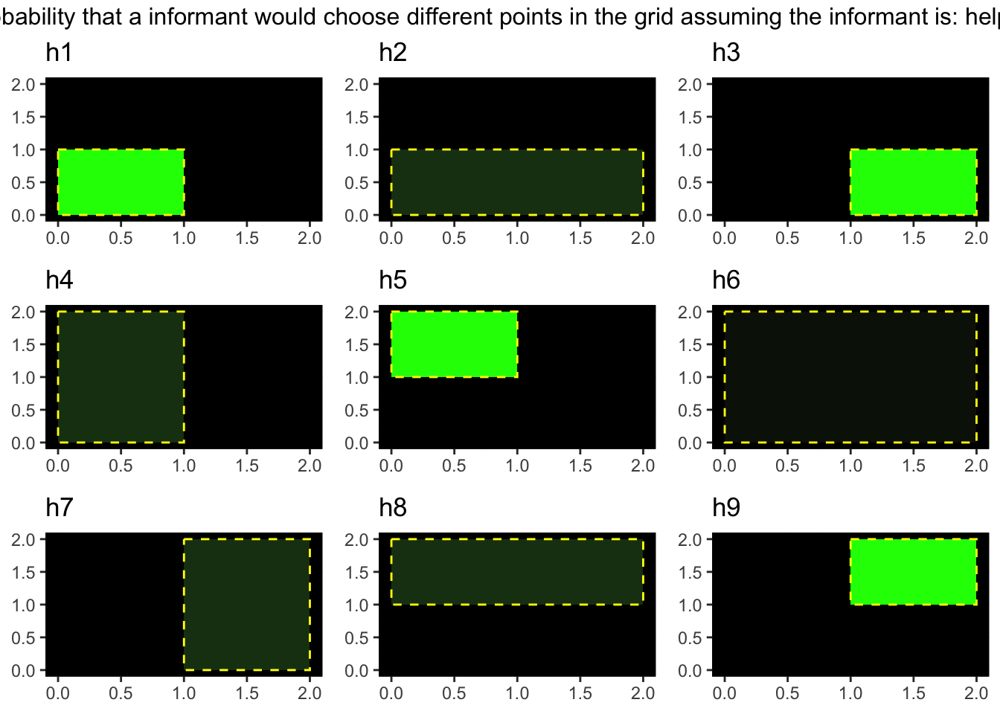
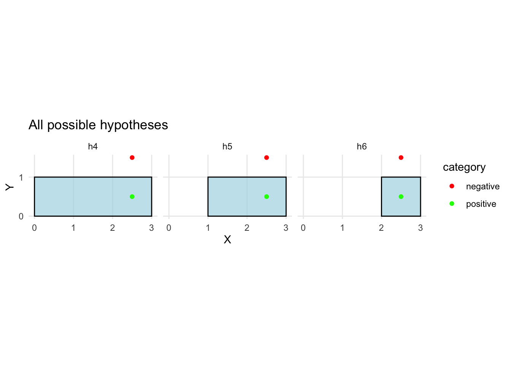
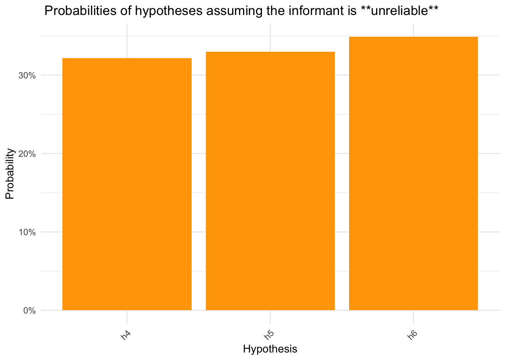
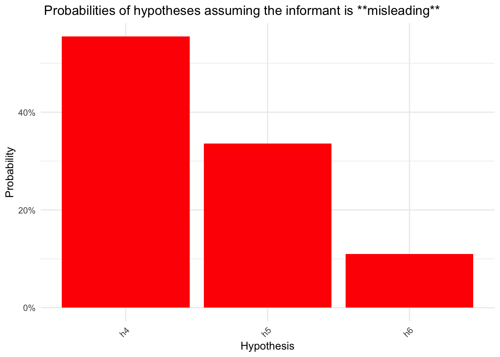

Maincode’s mission is to build AI that does not automate human cognition, but augments it. To achieve this mission, you need to be able to make systems that allow people to both 1) make the most of the strengths that different AI systems offer, but that 2) allow people to transparently evaluate the extent to which they should rely on AI in a given context. AI can also be improved by integrating what we know about how people are able to learn efficiently from other agents, and how they can use these agents to help them make decisions.
A serious problem with the most popular AI models is that they are both overconfident and do not permit any method for a user to neither evaluate the true confidence of the model, nor do they have any explicit system to evaluate how much a user might be accurately calibrating their decision-making given the model’s confidence. They are also generally much less efficient than humans are at learning, requiring vastly more data to learn from than humans do. Cognitive science has developed a number of models that can help us understand how people learn efficiently from other agents, and how they can use these agents to help them make better and more efficient decisions. These models can be used to improve AI systems by allowing them to make assumptions about how data is generated, and track the mental states of the user relying on their recommendation, in order to ensure their reliance on the AI system is calibrated with their uncertainty.
I am not an engineer – you know this, so hopefully it is no surprise when I say that my expertise is not in understanding the most efficient or effective ways to implement these systems. But what I do understand is human cognition. Specifically, I have a deep understanding of how and why people rely on other agents, like AI, to facilitate their decision-making. What I’m going to describe to you is a serious problem that I see in modern AI systems as it relates to helping people accurately and efficiently learn from (and with) AI agents.
What I’m going to show you in this demo is an application of what are called Bayesian theory of mind models. These kinds of models are very powerful because they offer an explanation for how, by learning from other agents, people are able to learn so much more efficiently than even the best AI models (the amount of data an LLM is trained on is astronomically higher than what any human will see in their lifetime). I am specifically going to demonstrate these models on an inductive learning task: a task where the agent needs to learn from examples to infer some category or concept. For the sake of simplicity, I’m going to assume that you have some basic understanding of standard Bayesian inference, but you can have a look at the introduction of my paper for a more detailed overview.
The scenario that I’m going to demonstrate here is as follows: imagine you are playing a game where you need to guess the size and location of a rectangular area given some clues that someone has provided for you. The AI in this scenario also has access to the same clues and uses a Bayesian model to infer the most likely rectangle, depending on how competent and helpful it believes the clue-giver (informant) is. The model can not only provide its recommendation, but can also describe the uncertainty of its predictions and help the human judge whether they are relying on the AIs recommendations as well as the informant’s clues, appropriately.
This basic inference game can easily by scaled up to a number of real-world decision-making scenarios:
- Power outage mapping An analyst is trying to guess which area of a city has lost power. They receive a few addresses from someone monitoring citizen reports, and need to infer the whole area of the outage based on the few reports that have been shown to them. These reports could have been chosen by a helpful informant who is deliberately choosing reports to help the analyst infer the outage area, or by an unreliable informant who is choosing reports at random.
- Military surveillance A scout shares sightings of enemy equipment at a few points on a grid. The analyst’s task is to infer the enemy base location based on these clues.The scout could be helpful and reliable, or they could be unreliable and misleading (such as if they have been compromised).
- Environmental hazard detection A team is trying to identify a contamination zone in a forest based on sensor readings from a few locations. The analyst must infer the extent of the contamination area based on these readings. Similar to above, there are many ways that the sensor readings could be chosen that affect the analyst’s ability to infer the contamination zone.
- Crime scene analysis A detective receives witness reports of suspicious activity at various locations in a neighborhood. They need to infer the area where the crime occurred based on these reports. If the witness reports are potentially spurious or unreliable, the detective’s inference will be affected compared to if the reports are reliable and helpful.
And many more. The point is that the model can be used to help people make decisions in a wide range of scenarios where they need to infer some hidden structure from a few clues, and where the trustworthiness of the informant is uncertain but can be inferred.
The goal of this demo is to offer very preliminary insight into how models developed in cognitive science to understand how people learn and decide efficiently and (in most cases) accurately, can be used to both make AI systems learn better, by allowing them to make assumptions about how data is generated, as well as track the mental states and behaviour of the user/analyst.
Setup Hypothesis Space
We begin by defining a simple 2D grid and generating all possible rectangular hypotheses. Each hypothesis represents a possible hidden space that an informant could be trying to convey.
H <-3x <-0:Hy <-0:Hpts_x <-seq(0.5, H -0.5, 1)pts_y <- pts_xpts <-expand.grid(x = pts_x, y = pts_y)hyp <-makeBorders(x, y)hyp$prior <-rep(0.1, nrow(hyp))hyp$rect_id <-rownames(hyp)justHyp <- hyp[, 1:4]
Plot all possible hypotheses
This plot shows the full hypothesis space — all possible areas that the informant could be trying to convey in the grid.
Scenario: program the model’s inference based on intel about the informant
In this scenario, we will imagine that we have some assumptions about how much we want to trust an informant, which we can then program into the model. This feature is especially useful in contexts where you do not have access to a model’s long-term reliability data with which to train a model, which is often the case in real-world applications. However, if you did have such data, you could easily have the model learn the informant’s reliability instead.
Step 1: Define how much the model should trust the informant
The model I am demonstrating today has a single parameter that defines how much the model trusts an informant. An alpha of < 0 means that the model assumes the informant is trying to minimise their belief in the true hypothesis. In other words, that they’re tying to systematically mislead them. An alpha of > 0 means that the informant is trying to maximise their belief in the true hypothesis (be helpful). An alpha of 0 means that clues are being chosen at random (they are unreliable).
In this demo, I’ll define three kinds of possible informants. Helpful but unreliable (alpha = 0.1), helpful & reliable (alpha = 2), and completely misleading (alpha = -2).
Step 2: The model calculates how probable it is that a learner would choose different points for each possible hypothesis.
There are two kinds of clues a informant could choose: “positive” points that are inside of the true rectangle, and “negative” points, that are outside of the true rectangle. I won’t go into detail about how/why the model calculates the likelihood of different points given each possible rectangle (it’s statistical rule based on the size of each rectangle, such that in helpful contexts it assumes smaller rectangles consistent with positive points are more likely, and larger rectangles consistent with negative points are more likely), but again, refer to my paper linked earlier for more detail.
all_likelihoods =NULLall_plots =NULLfor (i in1:length(informants)){informant_alpha <- informants[i]informant <-names(informants)[i]ppp <-findProbabilityOfPoints(hyp, pts, "pos", alpha = informant_alpha)ppp <-data.matrix(ppp /sum(ppp))nnn <-findProbabilityOfPoints(hyp, pts, "neg", alpha = informant_alpha)nnn <-data.matrix(nnn /sum(nnn))aaa <- ppp + nnncons_pts <-findConsistencyOfPoints(hyp, pts)likelihoods <-list("positive"= ppp, "negative"= nnn)all_likelihoods[[informant]] <-likelihoodsplot <-plotMultiplePointPosteriors(hyp, ppp, yrange =0:H, xrange =0:H)plot <-annotate_figure(plot, top =paste0("Probability that a informant would choose different points in the grid assuming the informant is: ", informant))all_plots[[informant]] <- plot}
Warning: The `size` argument of `element_rect()` is deprecated as of ggplot2 3.4.0.
ℹ Please use the `linewidth` argument instead.
Warning: The `size` argument of `element_line()` is deprecated as of ggplot2 3.4.0.
ℹ Please use the `linewidth` argument instead.
Now we’ll simulate how different informants provide clues and how the model updates its beliefs.
Step 3: The informant provides clues
# for the sake of this demo, let's just select 2 random points from in the gridset.seed(123)samplePoint <-function(pts, size =2) { index <-sample(1:nrow(pts), size = size, replace =FALSE)# randomly assign a sign to the points# "positive" points are inside the rectangle, "negative" points are outside sign <-sample(c("positive", "negative"), size = size, replace =TRUE, prob =c(0.5, 0.5)) point <-cbind(index = index, pts[index, ], category = sign) point}new_pts <-samplePoint(pts)new_pts
index x y category
3 3 2.5 0.5 positive
6 6 2.5 1.5 negative
# visaulize the pointsggplot() +geom_rect(data = hyp, fill ="lightblue", color ="black", alpha =0.7,aes(xmin = x1, xmax = x2, ymin = y1, ymax = y2)) +geom_point(data = new_pts, aes(x = x, y = y, color = category), size =3) +scale_x_continuous(breaks =0:2, minor_breaks =0:2) +scale_y_continuous(breaks =0:2, minor_breaks =0:2) +scale_color_manual(values =c("positive"="green", "negative"="red")) +coord_fixed() +theme_minimal() +labs(title ="Selected Points", x ="X", y ="Y")

For simplicity, let’s assume that the informant cannot lie (as I describe in my paper linked earlier, this is actually a pretty realistic assumption to make in most contexts). This assumption means that according to the clues, the rectangles depicted above are the only possible rectangles that could be the true rectangle.
Step 4: Model updates its beliefs based on the clues
Now that we have the clues, we can update the model’s beliefs about the true rectangle. The model will calculate the posterior probabilities of each hypothesis given the clues it has seen and how much it trusts the informant.
# calculate whas chance confidence would be given how many eligible hypotheses there are that are consistent with thhe clues chance <-1/nrow(updated_hypotheses)# define plot colours for different informantsplot_colours <-c(helpful ="darkgreen", unreliable ="orange", misleading ="red")# For each informant, plot posterior probabilities and show recommended rectanglefor (informant innames(updated_hypotheses_list)) { updated_hypotheses <- updated_hypotheses_list[[informant]]# Bar plot of posterior probabilitiesprint(ggplot(updated_hypotheses, aes(x = rect_id, y = posterior)) +geom_bar(stat ="identity", fill = plot_colours[informant]) +labs(title =paste0(" Probabilities of hypotheses assuming the informant is **", informant, "**"),x ="Hypothesis", y ="Probability") +theme_minimal() +scale_y_continuous(labels = scales::percent_format(accuracy =1)) +theme(axis.text.x =element_text(angle =45, hjust =1)) )# Show recommended rectangle and its probability recommended_rect <- updated_hypotheses[which.max(updated_hypotheses$posterior), ]print(paste0("Assuming the informant is: ", informant))print("Recommended rectangle (most probable):")print(rownames(recommended_rect))print("Confidence score: ") # confidence score is the model posterior - chance, such that if the model is guessing, confidence is 0. print(recommended_rect[,"posterior"] - chance)}

[1] "Assuming the informant is: helpful"
[1] "Recommended rectangle (most probable):"
[1] "h6"
[1] "Confidence score: "
[1] 0.3228082

[1] "Assuming the informant is: unreliable"
[1] "Recommended rectangle (most probable):"
[1] "h6"
[1] "Confidence score: "
[1] 0.0153802

[1] "Assuming the informant is: misleading"
[1] "Recommended rectangle (most probable):"
[1] "h4"
[1] "Confidence score: "
[1] 0.2214612
The above plots show a few things. First, they show how the model can adjust its inferences based on what we tell it about the information provider: in this case, how much it should trust the clues it gives. Second the plots show us how, using these models, the we can get not just a recommendation for what the most likely hypothesis is, but also how confident the model is about that recomendation.
Step 5: Analyst makes their own inference based on the clue
Another advantage of this type of models is that it can not only make recommendations to a human analyst, but it can also monitor the analyst’s decisions and give feedback on the quality of their inferences. Let’s examine such a scenario:
# model analyst guess assuming a particular alpha. Let's first assume that they are overly trusting: analyst_trust <-3analyst <-"trusting"# The analyst uses their own trust parameter to compute likelihoodsanalyst_likelihoods <-list("positive"=findProbabilityOfPoints(hyp, pts, "pos", alpha = analyst_trust),"negative"=findProbabilityOfPoints(hyp, pts, "neg", alpha = analyst_trust))analyst_likelihoods$positive <-data.matrix(analyst_likelihoods$positive /sum(analyst_likelihoods$positive))analyst_likelihoods$negative <-data.matrix(analyst_likelihoods$negative /sum(analyst_likelihoods$negative))# Analyst updates their beliefs based on the cluesanalyst_hypotheses <-getHypDist(new_pts, analyst_likelihoods, hyp)# # Plot analyst's posterior# ggplot(analyst_hypotheses, aes(x = rect_id, y = posterior)) +# geom_bar(stat = "identity", fill = "blue") +# labs(title = paste0("Analyst's Posterior Probabilities (", analyst, ")"),# x = "Hypothesis", y = "Probability") +# theme_minimal() +# scale_y_continuous(labels = scales::percent_format(accuracy = 1)) +# theme(axis.text.x = element_text(angle = 45, hjust = 1))# Show analyst's recommended rectangle and confidenceanalyst_recommended <- analyst_hypotheses[which.max(analyst_hypotheses$posterior), ]print("Analyst's recommended rectangle:")
Step 6: Model provides feedback on the analyst’s guess
# define actual informant reliability informant_reliability <-0.3# Model makes its own inference using the true informant reliabilitymodel_likelihoods <-list("positive"=findProbabilityOfPoints(hyp, pts, "pos", alpha = informant_reliability),"negative"=findProbabilityOfPoints(hyp, pts, "neg", alpha = informant_reliability))model_likelihoods$positive <-data.matrix(model_likelihoods$positive /sum(model_likelihoods$positive))model_likelihoods$negative <-data.matrix(model_likelihoods$negative /sum(model_likelihoods$negative))# Model updates its beliefs based on the cluesmodel_hypotheses <-getHypDist(new_pts, model_likelihoods, hyp)# Model's recommended rectangle and confidencemodel_recommended <- model_hypotheses[which.max(model_hypotheses$posterior), ]model_confidence <- model_recommended[,"posterior"] - (1/nrow(model_hypotheses))print("Model's recommended rectangle (using actual informant reliability):")
[1] "Model's recommended rectangle (using actual informant reliability):"
print(rownames(model_recommended))
[1] "h6"
print("Model's confidence score:")
[1] "Model's confidence score:"
print(model_confidence)
[1] 0.04696653
# Compare analyst's and model's recommendationsanalyst_rect <-rownames(analyst_recommended)model_rect <-rownames(model_recommended)if (analyst_rect == model_rect) {print("Analyst's guess matches the model's recommendation.")} else {print("Analyst's guess does NOT match the model's recommendation.")}
[1] "Analyst's guess matches the model's recommendation."
# Feedback for calibrationcalibration_gap <-abs(analyst_recommended[,"posterior"] - model_recommended[,"posterior"])print(paste0("Calibration gap (difference in confidence): ", round(calibration_gap, 3)))
[1] "Calibration gap (difference in confidence): 0.404"
if (analyst_recommended[,"posterior"] > model_recommended[,"posterior"]) {print("Analyst may be overconfident given the actual informant reliability.")} elseif (analyst_recommended[,"posterior"] < model_recommended[,"posterior"]) {print("Analyst may be underconfident given the actual informant reliability.")} else {print("Analyst's confidence is well calibrated with the model's estimate.")}
[1] "Analyst may be overconfident given the actual informant reliability."